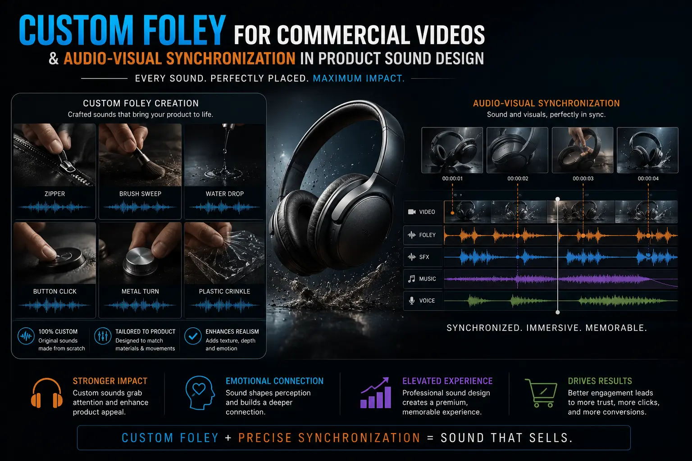
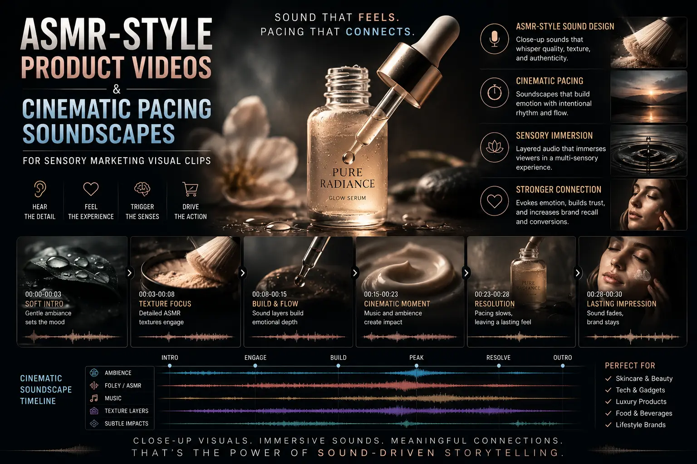

Using Custom Foley and Sound Design to Double the Impact of Product Teasers
Why Most Product Teasers Waste Half Their Persuasion Budget
The typical product teaser video is a visual-only production with an audio afterthought — a stock music track laid beneath the footage, perhaps a voiceover narration explaining what the viewer can already see, and no deliberate attention to the sonic identity of the product itself. This approach wastes approximately half of the video's available persuasion bandwidth, because human perception is not visual-only — it is multimodal, and the auditory channel carries information that the visual channel cannot.
When a viewer watches a product teaser for a luxury watch and sees the clasp close but hears nothing — or hears a generic click that does not match the specific mechanism shown — the brain registers the absence or the mismatch. The product looks premium; it does not feel premium. The sensory experience is incomplete. And an incomplete sensory experience produces incomplete desire.
Product sound design videography — the discipline of creating precise, custom audio that matches and amplifies the physical reality of the product shown on screen — closes this sensory gap. When the clasp click is recorded from the actual watch mechanism, when the leather strap's texture is captured by a close-placement microphone, when the case-back's seal produces a specific resonant tone that communicates engineering precision — the viewer does not just see a luxury watch. They feel it. And that tactile sensation, delivered through sound, is what converts visual interest into physical desire.
The Science of Tactile Audio: Why Sound Makes Products Feel Real
The neurological basis of tactile audio production lies in a phenomenon known as cross-modal sensory integration — the brain's automatic process of combining inputs from different senses into a unified perceptual experience. When visual and auditory information arrive simultaneously and in congruence — the sight of a surface being touched paired with the sound of that specific texture — the brain constructs a tactile perception even though no physical touch has occurred.
This is not a metaphor. Functional neuroimaging studies demonstrate that congruent audiovisual stimuli activate the somatosensory cortex — the brain region responsible for processing physical touch — even in the absence of actual tactile contact. The viewer who watches a hand running across a cashmere surface while hearing the specific soft friction sound of cashmere fibres experiences a neural activation pattern that is measurably similar to actually touching cashmere.
For sensory marketing visual clips, this cross-modal phenomenon is the most commercially powerful tool available — because it transforms a two-dimensional screen experience into a simulated three-dimensional sensory encounter. The product becomes tangible. The viewer's relationship with it shifts from observation to something approaching possession. And possession, even simulated, is the psychological precondition for purchase.
- Material identification through sound. The human auditory system is extraordinarily precise at identifying materials from their sound signatures — distinguishing glass from crystal, solid wood from veneer, genuine leather from synthetic, brushed metal from polished. Custom foley for commercial videos leverages this innate material recognition capability to communicate product quality through sound: the specific resonance of a heavy glass perfume bottle communicates density and quality; the particular creak of real leather communicates authenticity; the clean, mechanical precision of a well-engineered hinge communicates build quality. These sonic signals bypass the viewer's analytical mind and communicate directly to their material instincts.
- Weight and density perception. Sound communicates weight in ways that visuals alone cannot. The difference between the sound of a hollow object and a solid one, between a light object placed on a surface and a heavy one — these sonic cues communicate the physical substance of a product with a precision that even high-resolution video cannot match. A product that sounds heavy and solid is perceived as more valuable, more durable, and more worth its price — regardless of what the viewer's eyes alone would tell them.
- Precision and engineering quality through mechanical sound. The sound of a mechanism — a click, a snap, a rotation, a seal — communicates the precision of its engineering. A clean, crisp, defined mechanical sound signals quality manufacturing. A loose, rattling, or imprecise sound signals poor quality — even if the visual presentation is identical. Product sound design videography for products with mechanical elements — watches, electronics, automotive components, packaging mechanisms — uses precision-recorded mechanical sounds to communicate engineering quality that the viewer's eyes cannot independently verify.
Sensory Completion
Custom foley completes the sensory experience that visuals alone leave incomplete. The viewer who hears the product — its weight, its texture, its mechanism — processes it as a physical object they have experienced, not an image they have observed. This sensory completion increases product desire, recall, and purchase intent measurably beyond visual-only presentation.
Perceived Quality Elevation
Products with precision sound design are consistently rated as higher quality by viewers — even when the visual presentation is identical to versions without sound design. The sonic dimension adds a layer of quality evidence that the viewer processes subconsciously, elevating the perceived value of the product above what visuals alone communicate.
Attention Retention
Precisely synchronized audio-visual events create what psychoacoustic researchers call "binding moments" — instants of tight sensory congruence that the brain finds inherently satisfying and wants to continue experiencing. Each binding moment in a product teaser is a micro-retention event that reduces the probability of the viewer scrolling away.
Emotional Amplification
Sound is processed through the limbic system — the brain's emotional centre — before it reaches conscious awareness. Custom foley and sound design that are calibrated for emotional impact reach the viewer's emotional response system before their analytical mind has begun processing the visual information, priming them for the emotional response the teaser is designed to produce.

Custom Foley for Commercial Videos: The Production Process
Custom foley for commercial videos is a specialised production discipline that requires specific equipment, specific acoustic environments, and specific performance skills — it is not simply "recording sounds" but the art of creating sonic performances that match, enhance, and emotionally amplify the visual content they accompany.
The production stages of professional custom foley for product teasers:
- Sound design mapping from the visual storyboard. Before any sound is recorded, the sound designer works from the video edit — or, ideally, from the pre-production storyboard — to identify every moment where a sound event should occur. This is not a simple list of "what makes noise" — it is a creative analysis of which moments in the teaser will benefit from sonic emphasis, which product qualities the sound should communicate, and which emotional responses each sound event should trigger. A product teaser for a premium skincare brand might identify twelve distinct sound events: the box opening, the tissue paper being drawn aside, the bottle being lifted, the cap being removed, the pump mechanism, the product dispensing, the texture on skin — each requiring its own designed sound.
- Foley recording with the actual product. The defining characteristic of custom foley for commercial videos — as distinguished from stock sound library use — is that the sounds are recorded using the actual product or identical materials. The foley artist works with the physical product, performing each action shown in the video while a recording engineer captures the sound using close-placement condenser microphones in a controlled acoustic environment. This produces sounds that carry the authentic sonic fingerprint of the specific product — the exact resonance of that specific glass, the exact friction of that specific fabric, the exact mechanism sound of that specific closure — rather than a generic approximation from a sound library.
- Layering and processing for emotional impact. Raw foley recordings are the sonic equivalent of raw camera footage — they are accurate but not yet emotionally optimised. The sound designer processes each recorded element through equalisation (to emphasise the frequencies that communicate the desired material quality), compression (to control dynamic range and ensure the sound cuts through on mobile speakers), spatial processing (to create a sense of proximity and intimacy), and layering (combining multiple recorded elements to create sounds that are physically accurate but emotionally heightened). The goal is sound that is truthful to the product but more vivid and satisfying than the sound the product makes in everyday use — the sonic equivalent of professional lighting that makes a product look like the best version of itself.
- Precision synchronization to the visual edit. The final stage of foley production — audio-visual synchronization — is the most technically demanding, because the perceptual impact of synchronized audiovisual events depends on temporal precision measured in milliseconds. Each sound event must be aligned to its corresponding visual event within a tolerance of approximately 20–30 milliseconds — the threshold below which the brain perceives the sound and image as a single unified event rather than two separate ones. This frame-accurate synchronization is what produces the satisfying "snap" of a well-produced product teaser — the sensation that the product's physical reality is being transmitted through the screen.
ASMR-Style Product Videos: The Intimate Sonic Approach
ASMR style product videos represent a specific application of tactile audio production that has emerged as one of the most commercially effective formats for product marketing in social media environments — particularly for products where texture, material quality, and the physical experience of use are primary purchase motivators.
The ASMR approach to product teaser sound design:
Beauty and Skincare
- Close-miked sounds of product dispensing — the pump, the squeeze, the click of compact closures
- Texture sounds of product application — cream on skin, brush on powder, liquid on cotton
- Packaging interaction sounds — magnetic closures, sliding drawers, tissue paper unwrapping
- Amplified material sounds — the weight of a glass bottle placed on marble, the snap of a lipstick tube
Fashion and Accessories
- Fabric texture sounds — the specific friction of silk versus cotton versus denim versus leather
- Hardware sounds — zipper pulls, button snaps, buckle closures, clasp mechanisms
- Movement sounds — the drape of fabric falling, the structured sound of a tailored garment
- Unboxing sounds — tissue paper, ribbon pulling, box lid lifting, dust bag sliding
Food and Beverage
- Preparation sounds — chopping, sizzling, pouring, stirring, grinding, blending
- Consumption sounds — the crunch of crisp textures, the pour of liquids, the fizz of carbonation
- Packaging sounds — seal breaking, cap twisting, foil peeling, wrapper crinkling
- Ambient sounds — the bubble of boiling, the hiss of steam, the drip of condensation
The commercial effectiveness of ASMR style product videos on social media platforms is consistently documented in engagement data: watch times 2–3× longer than equivalent visuals with standard music tracks, replay rates significantly above platform averages, and share rates driven by the sensory pleasure the content delivers. The format works because it offers the viewer something that standard commercial content does not — a genuine sensory experience rather than a visual advertisement — and that experience is the foundation of the product desire that converts to purchase.
Audio-Visual Synchronization: The Technical Framework
Audio-visual synchronization in product sound design videography is not simply a matter of placing sounds at the right moments — it is a deliberate technical and creative framework that determines how the viewer experiences every second of the teaser. The synchronization decisions made in post-production are as important to the final impact of the video as the camera angles chosen during the shoot.
The synchronization principles for high-impact product teasers:
- Hard sync points: the impact moments. Hard sync points are the moments where a sound event is precisely locked to a visual event — the frame-accurate alignment of a click to a closure, a thud to a placement, a snap to a mechanism engagement. These are the moments that produce the visceral satisfaction response in the viewer — the sensation that the product's physical reality is being communicated directly through the screen. A 30-second product teaser typically contains 6–10 hard sync points, strategically distributed to maintain the viewer's sensory engagement throughout the duration.
- Soft sync: the ambient texture layer. Between the hard sync points, the audio track maintains a continuous textural relationship with the visual content through soft synchronization — ambient sounds, room tones, and subtle textural elements that maintain the sensory environment without demanding the viewer's conscious attention. The soft sync layer is felt rather than heard — it maintains the viewer's immersion in the product's sonic world without the fatigue of continuous high-impact sound events.
- Anticipatory sound: building tension before the visual event. One of the most powerful techniques in cinematic pacing soundscapes is the use of anticipatory sound — a subtle sonic element that precedes and builds toward a visual event, creating a moment of tension that the visual event then releases. The quiet mechanical sound that precedes a product reveal, the rising ambient tone before a lid opens, the subtle breath of air movement before fabric unfolds — these anticipatory sounds create micro-narratives of expectation and satisfaction that structure the viewer's emotional experience of the teaser.
- Silence as a deliberate sound design choice. In a sonic environment where every other product teaser uses wall-to-wall music and narration, strategic silence becomes a powerful differentiator. A moment of complete silence before a key product reveal — followed by the clean, precise sound of the product itself — creates a contrast effect that amplifies the impact of the sound event by an order of magnitude compared to the same sound heard against a continuous music bed. Professional ad film makers use silence not as the absence of sound design but as its most sophisticated expression.

Cinematic Pacing Soundscapes: Structuring the Emotional Arc
Cinematic pacing soundscapes apply the narrative sound design principles of feature film production to the compressed timeline of a product teaser — creating an emotional arc that guides the viewer from curiosity through engagement to desire within 15 to 60 seconds. The sound design is not accompaniment — it is the primary vehicle for the teaser's emotional structure.
The emotional arc structure for a product teaser soundscape:
- Opening: sonic curiosity (0–5 seconds). The teaser opens with a sound that creates immediate auditory curiosity — an unusual texture, an unexpected sonic element, or the amplified intimate sound of a product interaction that the viewer has never heard at this level of detail. This opening sound serves the same function as the visual hook — it captures attention and creates the expectation that what follows will deliver continued sensory interest. For high-impact video sound effects, the opening moment determines whether the viewer stays or scrolls.
- Development: sonic exploration (5–20 seconds). The middle section of the teaser uses a progression of sound events to guide the viewer through a sensory exploration of the product — revealing its textures, its materials, its mechanisms, and its physical character through a sequence of carefully designed sonic moments. Each sound event reveals something new about the product's physical identity, building a cumulative sensory portrait that grows richer with each second. The pacing of these sound events follows a rhythm that maintains engagement without overwhelm — typically a new significant sound event every 2–3 seconds, with textural continuity between events.
- Climax: sonic satisfaction (final 5–10 seconds). The teaser builds toward a climactic sound event — the most satisfying, most emotionally resonant sound moment in the piece — that coincides with the product's key visual reveal or the moment of maximum product desire. This climactic sound is typically the most carefully designed element in the entire soundscape — the sound that the viewer will remember, replay, and associate with the product's identity. For a watch brand, it might be the precise, clean click of the crown setting. For a skincare brand, it might be the satisfying seal of the packaging closing. For a food brand, it might be the unmistakable crunch of the first bite.
- Resolution: sonic identity (final 2–3 seconds). The teaser resolves with a brief sonic signature — a simple, memorable sound element that becomes associated with the brand itself. This sonic logo or brand sound serves the same function as a visual logo — it provides a consistent, recognisable identity marker that the audience associates with the brand across all touchpoints. Professional ad film makers invest in developing sonic brand signatures that are as carefully designed as visual brand identities — because the ear remembers what the eye forgets.
High-Impact Video Sound Effects: The Technical Production Requirements
Producing high-impact video sound effects for product teasers requires specific technical capabilities that distinguish professional product sound design videography from amateur or stock-based approaches:
- Close-miking with condenser microphones. The intimate, detailed sound quality that defines premium product foley requires condenser microphones placed within 5–15 centimetres of the sound source — capturing the full frequency spectrum of the product's material sounds with a clarity and detail that standard production microphones at standard distances cannot achieve. Small-diaphragm condenser microphones are typically preferred for their transient response — the ability to capture the sharp, fast attack of mechanical sounds like clicks, snaps, and impacts with precision.
- Controlled acoustic recording environments. Product foley requires recording environments with minimal ambient noise and controlled reverberation — ensuring that the recorded sounds are clean, detailed, and free from environmental coloration that would reduce their perceived quality or make them difficult to integrate with the visual edit. Professional foley recording is typically conducted in acoustically treated studios or purpose-built foley stages where the recording engineer has full control over the sonic environment.
- High-resolution audio recording. Product foley for commercial use is recorded at minimum 24-bit/96kHz resolution — capturing detail in the high-frequency spectrum that is essential for communicating material textures (the shimmer of silk, the grain of wood, the precision of metal mechanisms) and providing sufficient dynamic range to preserve the natural impact of physical sound events without the compression artifacts that reduce perceived quality.
- Spatial audio design for mobile playback. The majority of product teasers are consumed on mobile devices through built-in speakers or earbuds — a playback environment with significant frequency response limitations. Professional tactile audio production includes a mobile-optimisation pass that ensures the critical sonic elements — the material textures, the impact sounds, the spatial depth — translate effectively to small speakers and compressed audio formats without losing the sensory impact that justifies the production investment.
Sensory Marketing Visual Clips: The Commercial Application
Sensory marketing visual clips — short-form product content designed specifically to deliver a multisensory experience through the combined impact of professional visuals and precision sound design — represent the commercial application of all the production disciplines described above. These are not traditional advertisements — they are sensory experiences designed to make the viewer feel the product before they decide to buy it.
The specific commercial contexts where sensory marketing visual clips with custom sound design produce the strongest returns:
- Social media product launch content. Product launch teasers with custom foley and precision sound design consistently outperform identical visual content with stock music on every engagement metric — watch time, completion rate, share rate, save rate, and click-through to product pages. The sensory dimension creates content that viewers actively seek to experience rather than passively consume — producing organic reach through shares and saves that extend the content's distribution beyond paid media budgets.
- E-commerce product page video. Product page videos with custom sound design address the fundamental limitation of online retail — the inability to physically handle the product — by providing a sonic substitute for tactile experience. A product page video that communicates the weight, texture, and mechanism quality of the product through sound reduces the perceptual uncertainty that causes abandoned carts and increases the buyer's confidence in what they are purchasing.
- Paid digital advertising. In competitive paid media environments where cost-per-attention is rising, high-impact video sound effects and custom foley provide a differentiation advantage that reduces cost-per-view and increases cost-efficiency across the entire paid media funnel. A product ad that delivers a genuine sensory experience earns longer view durations, which signal relevance to platform algorithms and earn lower cost-per-impression rates — making the sound design investment directly measurable in advertising efficiency.
- Retail and trade show display content. In physical retail and exhibition environments where video content plays on screens, professional sound design creates an immersive product experience that draws attention from across the space and holds it — converting passing foot traffic into engaged potential customers through the sensory pull of precision-designed product audio.
The Production Planning Framework for Sound-Designed Product Teasers
Integrating custom foley for commercial videos and professional product sound design videography into a product teaser production requires planning from the earliest pre-production stage — sound design that is treated as an afterthought produces afterthought-quality results.
The planning framework:
- Sound design brief in pre-production. The sound design brief should be developed alongside the visual storyboard — identifying every planned sound event, its emotional function, its relationship to the brand's sonic identity, and any specific recording requirements (access to the actual product, specific materials for foley props, particular acoustic environments). The sound designer should be involved in creative discussions from the storyboard stage, contributing ideas for how sound can enhance, extend, and amplify the visual narrative rather than simply illustrating it.
- Production audio capture during the shoot. During the video shoot, production audio should be captured using dedicated recording equipment (separate from the camera's built-in microphones) — recording the actual sounds the product makes during the filmed interactions. This production audio provides the authentic sonic reference that guides the foley recording session and may contribute elements directly to the final mix.
- Foley recording session with the product. A dedicated foley recording session — ideally conducted after the visual edit is assembled but before the final mix — captures the specific custom sounds needed for each identified sound event. The foley artist works with the actual product (or identical samples) and performs each action to match the visual content, producing raw recordings that carry the authentic sonic character of the product's materials and mechanisms.
- Sound design, mixing, and mastering. The final production stages — sound design (processing and layering the recorded foley), mixing (balancing all audio elements for emotional impact), and mastering (optimising the final audio for playback across devices and platforms) — should be allocated sufficient time and budget to achieve the quality that justifies the custom foley investment. Professional sound design and mixing for a 30-second product teaser typically requires a dedicated day of post-production audio work — an investment that is small relative to the total production budget but disproportionately large in its impact on the final product's commercial effectiveness.
Conclusion
Product sound design videography, custom foley for commercial videos, audio-visual synchronization, ASMR style product videos, and cinematic pacing soundscapes are the production disciplines that transform a product teaser from a visual presentation into a multisensory experience — closing the gap between the screen and the viewer's hands, between observation and the simulated sensation of physical contact with the product itself.
The commercial impact is not subtle. High-impact video sound effects and tactile audio production consistently double the engagement metrics of product teasers — watch time, completion rate, share rate, and downstream conversion — because they deliver something that visual-only content fundamentally cannot: the feeling of the product. And feeling, not seeing, is what converts interest into desire and desire into purchase.
At The PhD Ads in Madurai, we produce product sound design videography, custom foley for commercial videos, and sensory marketing visual clips for brands ready to give their audience not just a visual of their product but the full sensory experience of it — precision-crafted sound design that makes your product feel real before the viewer has touched it.
Key Topics
Ready to Make Your Product Teasers Sound as Good as They Look?
At The PhD Ads in Madurai, we produce product sound design videography, custom foley for commercial videos, and sensory marketing visual clips for brands ready to double the impact of their product content — precision sound design that closes the gap between the screen and the viewer's hands.
Email: team@e2o.in